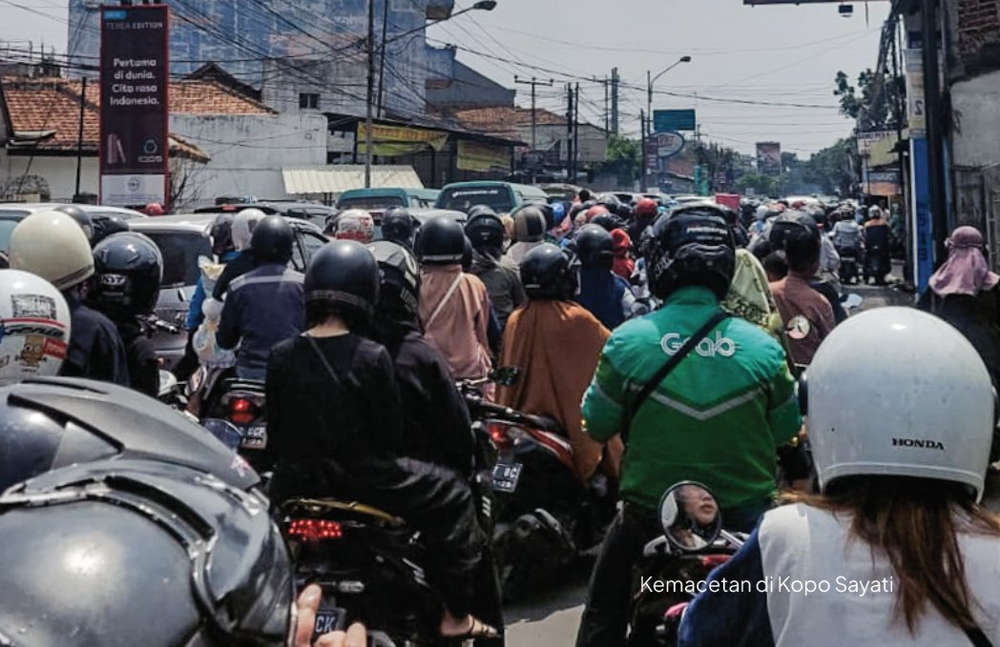

Kopo, Kapan Punya Transportasi Massal?
Transport for Bandung • 3 Mei 2025
Kopo, jalan penuh cerita dan masalah bagi para penglaju yg melaluinya. Bagaimana tidak, berbagai masalah seperti banjir dan kemacetan terus menghantui jalan utama Soreang-Bandung ini. Satu masalah lagi yang tak dapat dilepaskan dari jalan ini: kemacetan.
Kelokan jalur nonaktif di timur Stasiun Cipatat, dipotret pada 2024.
Kopo, siapa yang tidak tahu ruwetnya lalu lintas di sepanjang jalan ini. Jalan yang menjadi penghubung utama Soreang menuju Kota Bandung ini menanggung beban ribuan penglaju Bandung selatan setiap harinya. Sayangnya, Jalan Kopo dari Leuwipanjang hingga Soreang merupakan satu-satunya jalan utama dari Bandung selatan ke Kota Bandung yang tidak terlayani transportasi massal. Bojongsoang telah terlayani Metro Jabar Trans (MJT) Koridor 3. Dayeuhkolot telah terlayani sebagian oleh MJT Koridor 5 dan Koridor 6 (meskipun dengan halte dan jadwal yang terbatas).
Kopo? Hanya mengandalkan angkot hijaunya yang terkenal itu. Terkenal karena sempat menolak keberadaan Trans Metro Pasundan (TMP, sekarang MJT) Koridor 1 (Leuwipanjang-Soreang via Tol Soroja) pada 2022 silam. Alasannya? TMP dianggap merebut penumpang mereka.
Alasan yang sulit diterima sebenarnya. Rute TMP tidak beririsan dengan rute angkot dan hanya berpotongan di tiga perempatan. Kedua rute baru bertemu di Soekarno Hatta, menjelang Terminal Leuwipanjang.
Rute TMP Koridor 1, hingga kini berubah menjadi MJT, juga kurang masuk akal. Alih-alih melayani kantong penumpang terbesarnya di Kopo, rute ini justru melalui Tol Soroja. Rute ini seakan-akan menghindari wargi Kopo yang sudah muak dengan kemacetan. Bukannya berfungsi sebagai transportasi umum yang melayani masyarakat, justru bertindak sebagai angkutan antar jemput Bandung-Soreang. Alasan pasti mengapa rute tersebut menghindari Kopo tidak diketahui hingga saat ini. Apakah karena menghindari resistensi dengan angkutan eksisting? Atau hanya ingin memanfaatkan infrastruktur jalan tol? Tidak ada yang tahu. Jika memang karena "alasan historis", beranggapan bahwa moda transportasi lain telah terlebih dahulu melayani Kopo selama puluhan tahun, Damri sebagai operator Koridor 1 pun juga sudah melayani Jalan Kopo sejak 1952.
Solusi?
Program BRT Metro Jabar Trans berencana melanjutkan rute Leuwipanjang-Soreang. Bedanya, rute tersebut rencananya akan dialihkan melalui Jalan Kopo. Hal ini terlihat dari peta daftar rencana rute yang dipublikasikan oleh beberapa sumber Transport for Bandung.
Angkot yang saat ini beroperasi pun tidak dapat dibiarkan begitu saja. Rangkul koperasi angkot yang mengelola rute angkot tersebut (jika masih ada). Kami yakin pemerintah pun lebih paham caranya.
Sebenarnya, terdapat pula rencana LRT Leuwipanjang-Soreang yang melalui Jalan Kopo. Namun, seperti pepatah "bagai oasis di Jalan Kopo", rencana tersebut cukup dijadikan hiburan saja hingga benar-benar terealisasi.